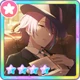
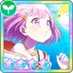
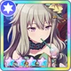

Wonderland x Showtime

Japanese: ワンダーランズ×ショウタイム
Romanji: wandāranzuxshōtaimu
English: Wonderlands x Showtime
Information
Logo:
Member
Virtual Singer
Color
#FF9900
Orange
Wonderland x Showtime
Information
Logo:
Member
Virtual Singer
#FF9900
Orange
An eccentric musical show unit, proclaiming each day
wonderful and rushing out to meet it head on.
—Colorful Stage Site
| Image | Kanji | English | Level Effect (Max) | Character/Unit | Charm Type |
|---|---|---|---|---|---|
 |
ショースターの銅像 | Statue of a Star | 30% Boost on all stats | Temma Tsukasa |  |
 |
ミニチュア | Mini Model | 30% Boost on all stats | Otori Emu |  |
 |
歌うロボッ | Singing Robot | 30% Boost on all stats | Kusanagi Nene |  |
 |
ドローン入りのショー道具 | Show Kit (Drones Incl.) | 30% Boost on all stats | Kamishiro Rui |  |
 |
ミク(?)のきぐるみ | Miku(?) Mascot | 6% Boost on all stats | Hatsune Miku | |
 |
座長のショーステッキ | Showman's Baton | 30% Boost on all stats | KAITO | |
 |
パレードフロート | Parade Float | 7.5% Boost on all stats | Wonderland x Showtime |  |
 |
ショーフラッグ | Show Flag | 7.5% Boost on all stats | Wonderland x Showtime | |
 |
ミュージックスピーカー | Music Speakers | 1.5% Boost on all stats | VIRTUAL SINGER | |
| Card | Character | SEKAI | Gacha |
|---|---|---|---|
|
|
Kusanagi Nene | ||
|
|
Kamishiro Rui |
| Cover Art | Song Name | Producer(s) | Date Added (JP) |
|---|---|---|---|
| Sweet Magic | Junky | 2020/09/30 | 2021/12/07 |
| MagBuriki no Dance | Hinata Electric Works | 2020/09/30 | 2021/12/07 |
| Bouken no Sho ga | Jesus | - | - |
| Kiemashita | WONDERFUL☆OPPORTUNITY! | 2020/09/30 | 2021/12/07 |

Gift From Above Kusanagi Nene
120% score boost for 5 seconds |

Tell Me About Your Christmas ♪MEIKO
130% score boost for 5 seconds (PERFECTs only) |
||||

Star MelodhyTsukasa Temma
130% score boost for 5 seconds (PERFECTs only) |

Your Eyes Are Sparkly☆Otori Emu
130% score boost for 5 seconds (PERFECTs only) |

The Little SquirrelsKusanagi Nene
All BADs and higher become PERFECTs for 7 seconds; 100% score boost for 5 seconds |

Fantastic PlannerKamishiro Rui
All BADs and higher will become PERFECTs for 7 seconds; 100% score boost for 5 seconds |

Wonder ☆ Christmas!Hatsune Miku
All BADs and higher become PERFECTs for 7 seconds; 100% score boost for 5 seconds |
|

The Difference I Was Reminded OfTsukasa Temma
120% score boost for 5 seconds |

Quack Quack ☆ Duck ChallengeOtori Emu
All BADs and higher will become PERFECTs for 7 seconds; 100% score boost for 5 seconds |

The Target Wont Get AwayKusanagi Nene
Recover 500 life; 100% score boost for 5 second |


Appreciating That SpiritKamishiro Rui
Recover 500 life; 100% score boost for 5 seconds |

Cupid Of FriendshipKagamine Rin
Recover 500 life; 100% score boost for 5 seconds. |
|
The Difference I Was Reminded OfKusanagi Nene
Recover 500 life. 100% boscore boots for 5 second |
Sparkling CruiosityKagmine Len130% score boots for 5 second (PERFECT only) |
||||

I'm the leadTsuksasa Temma
130% score boost for 5 seconds (PERFECTs only) |

An Irreplaceable SmileOtori Emu
120% score boost for 5 seconds |

Messenger of FeelingsKusanagi Nene
Recover 500 life, 100% score boost for 5 seconds |

The Fire WithinKamishiro Rui
130% score boost for 5 seconds (PERFECTs only) |

Secret GuidanceKAITO
All BADs and higher become PERFECTs for 7 seconds; 100% score boost for 5 seconds |
|

An Emergency Meeting_!Tsuksasa Temma
Recover 500 life; 100% score boost for 5 seconds |

Same Face as Mr. Octopus ☆Otori Emu
12Recover 500 life; 100% score boost for 5 seconds |

Dazzling Dream StageKusanagi Nene
90% score boost for 5 seconds (140% until GOOD or lower) |

I'm Not Going to LoseKamishiro Rui
120% score boost for 5 seconds |

Playing Tag With the Lion Dance RobotKagamine Rin
Score boost 100% for 5 seconds; For every member of Wonderlands x Showtime in your team, there will be an extra score boost of 10%, with a maximum boost of 150% |
|

Man of the Joyous New YearTsuksasa Temma
120% score boost for 5 seconds |

The Radiance Reflected in These EyesOtori Emu
All BADs and higher become PERFECTs for 7 seconds; 100% score boost for 5 seconds |

A Sudden OrdealKamishiro Rui
Recover 500 life; 100% score boost for 5 seconds |


Len A Treasure Chest Full of FunKagamine Len
All BADs and higher become PERFECTs for 7 seconds; 100% score boost for 5 seconds |
||

Zombies?! Time To Panic!Tsuksasa Temma
Recover 500 life; 100% score boost for 5 seconds |
Surprise☆For☆My☆FamilyOtori Emu
All BADs and higher will become PERFECTs for 7 seconds; 100% score boost for 5 seconds |

A Shy VisitorKusanagi Nene
130% score boost for 5 seconds (PERFECTs only) |

Unexpected HappeningsKamishiro Rui
120% score boost for 5 seconds |

A Chat With The LostKAITO
130% score boost for 5 seconds (PERFECTs only) |
|

Persistent Game of ChaseTsuksasa Temma
All BADs and higher will become PERFECTs for 7 seconds; 100% score boost for 5 seconds |
Ju-Ju-Ju-Juuump!Otori Emu
120% score boost for 5 seconds. |

Appreciation for Playing TogetherKusanagi Nene
120% score boost for 5 seconds |


Longing for the Old DaysKamishiro Rui
All BADs and higher will become PERFECTs for 7 seconds; 100% score boost for 5 seconds |


It's Okay, EveryoneKAITO
Score boost 100% for 5 seconds; For every member of Wonderlands x Showtime in your team, there will be an extra score boost of 10%, with a maximum boost of 150% |
|

Fishing Before the StormOtori Emu
130% score boost for 5 seconds (PERFECTs only) |
|||||

Big Brother AgonyTsuksasa Temma
120% score boost for 5 seconds |

Sprint! Relay Anchor ☆Otori Emu
Recover 500 life; 100% score boost for 5 seconds |

Celebrate With FireworksKusanagi Nene
All BADs and higher will become PERFECTs for 7 seconds; 100% score boost for 5 seconds |

Backstage AlchemistKamishiro Rui
Recover 500 life; 100% score boost for 5 seconds |

Time To Cheer!Kamishiro Rui
130% score boost for 5 seconds (PERFECTs only) |
|

Backstage EncouragementTsuksasa Temma
All BADs and higher will become PERFECTs for 7 seconds; 100% score boost for 5 seconds |


The Barbeque Magistrate?!Otori Emu
130% score boost for 5 seconds (PERFECTs only) |


Because I Wasn't Good EnoughKusanagi Nene
Recover 500 life; 100% score boost for 5 seconds |

The Right Words to ThrowKamishiro Rui
All BADs and higher will become PERFECTs for 7 seconds; 100% score boost for 5 seconds |

Longing for the SeaKamishiro Rui
130% score boost for 5 seconds (PERFECTs only) |
|

Count Otori Has ArrivedOtori Emu
120% score boost for 5 seconds |


I'll Always Be Here to Give AdviceKamishiro Rui
130% score boost for 5 seconds (PERFECTs only) |


Believe in the Power of SupportKAITO
All BADS and higher will become PERFECTs for 7 seconds; 100% score boost for 5 seconds |
|||

The Outcome Of My ChoiceTsuksasa Temma
120% score boost for 5 seconds |

Our Feelings Become OneOtori Emu
All BADs and higher will become PERFECTs for 7 seconds; 100% score boost for 5 seconds |


The Confidence You Gave MeKusanagi Nene
130% score boost for 5 seconds (PERFECTs only) |

Endless Imagination & ChallengesKamishiro Rui
Score boost 90% if life is under 800 (120% if life is over 800) for 5 seconds For every 10 life, score is increased by +1% (up to 140%) |

New Troupe Member!Kagamine Len
Recover 500 life; 100% score boost for 5 seconds |
|

Dance! And! Sing!Tsuksasa Temma
All BADs and higher will become PERFECTs for 7 seconds; 100% score boost for 5 seconds |

Private Emu's Investigating!Otori Emu
Recover 500 life; 100% score boost for 5 seconds |

Childhood Friend's GazeKusanagi Nene
All BADs and higher will become PERFECTs for 7 seconds; 100% score boost for 5 seconds |

Brilliance At TwilightKamishiro Rui
120% score boost for 5 seconds |

Where Is The Crying Coming From?MEIKO
120% score boost for 5 seconds |
|

Receiving Your Inspiration!Tsuksasa Temma
Recover 500 life; 100% score boost for 5 seconds |

Imagining the Other PartyKusanagi Nene
120% score boost for 5 seconds |

Blowing in The Evening BreezeKamishiro Rui
130% score boost for 5 seconds (PERFECTs only) |

What Do Kappas Like?Megurine Luka
All BADs and higher will become PERFECTs for 7 seconds; 100% score boost for 5 seconds |